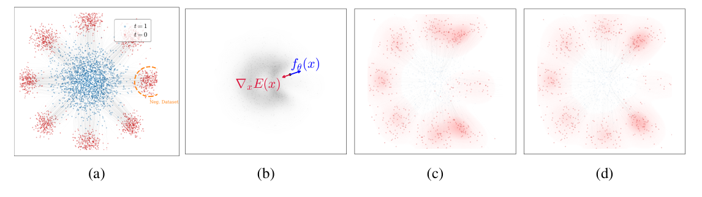
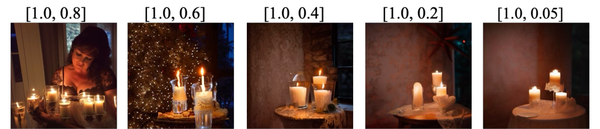

Paper: Mingyu Kim, Young-Heon Kim, Mijung Park. Safety-Guided Flow: A Unified Framework for Negative Guidance in Safe Generation. ICLR 2026 (Oral). arXiv:2603.13300 · OpenReview · Code
TL;DR
How do you make a diffusion or flow model generate safe content without retraining it? Recent training-free answers — Shielded Diffusion (SPELL) and Safe Denoiser — both push samples away from a set of known-unsafe examples during denoising, but each with its own ad-hoc force and an empirically hand-tuned schedule.
This paper, Safety-Guided Flow (SGF), gives that whole family a single principled foundation. It defines an energy landscape over the sample space using the Maximum Mean Discrepancy (MMD) to a negation set of unsafe examples, and steers generation uphill on that energy — away from everything unsafe. Both SPELL and Safe Denoiser fall out as special cases of this one gradient field. It then uses control barrier function (CBF) analysis to prove what previous work only observed empirically: safety guidance is only effective inside a critical time window early in denoising, and should be switched off afterwards. Plugged into SAFREE on Stable Diffusion, SGF drops the nudity attack success rate on Ring-A-Bell from 27.8% to 5.1% with essentially no image-quality cost, and the same mechanism mitigates memorization (95th-percentile train similarity 0.437 → 0.328 while FID improves).
If you read my review of the Safety-Aware Denoiser (SAD) — SAD’s text-diffusion guidance is built directly on the Safe Denoiser this paper generalizes, and SAD’s “early time window” heuristic is exactly what SGF proves. This is the theory piece of that research line.
Why this problem matters
Diffusion and flow models are deployed in places where unsafe outputs have real consequences — NSFW or biased images, regurgitated private training data, unsafe robot trajectories. Two research communities converged on the same instinct from opposite directions:
- Robot planning uses control barrier functions to keep generated trajectories out of geometrically-defined obstacle regions at every denoising step — rigorous, but built for low-dimensional states and engineered constraints, with no probabilistic view of data.
- Image generation uses data-driven negative guidance (SPELL’s radial repulsion, Safe Denoiser’s denoiser decomposition) — practical and training-free, but heuristic: neither says when guidance is actually necessary, and always-on guidance is known to wreck sample quality.
SGF’s contribution is to merge the two: a probabilistic repulsive force (from the image line) with a formal reach-avoid analysis of its timing (from the control line).
The core mechanism: how SGF generates safe content
This is the heart of the paper, so let me walk through the full pipeline of how a sample ends up safe.
Step 1 — Define “unsafe” by example, not by rule. You curate a negation set \(\mathcal{D}^- = \{y_i\}_{i=1}^N\) of concrete unsafe examples: 515 nudity images from I2P, copyrighted works, or the training set itself (for memorization). No classifier, no fine-tuning, no text rules — unsafety is defined extensionally, by what you show it.
Step 2 — Turn the negation set into an energy landscape. SGF defines a potential at the current sample \(x_t\) as the squared MMD between a point mass at \(x_t\) and the negation set, under an RBF kernel \(k_\sigma\):
\[ E(x_t) \equiv \widehat{\mathrm{MMD}}^2_{k_\sigma}\!\left(\{x_t\}, \mathcal{D}^-\right) \]
This energy is low when \(x_t\) resembles unsafe examples and high when it is far from all of them. “Safe” is literally the high-energy region of this landscape.
Step 3 — Steer generation uphill. The flow-matching ODE gets one extra term:
\[ \dot{x}_t = f_\theta(x_t, t) + \lambda(t)\, \nabla_x E(x_t) \]
The gradient has a beautifully interpretable closed form:
\[ \nabla_{x_t} E \propto \; x_t - \sum_{i=1}^{N} w_i(x_t)\, y_i, \qquad w_i(x_t) \propto k_\sigma(x_t, y_i) \]
That is: compute a kernel-weighted average of the unsafe examples nearest to where the sample is currently heading, and push directly away from it. Samples drifting toward unsafe territory feel a strong shove; samples already far away feel almost nothing (the RBF weights vanish). Safety is enforced during generation — the trajectory itself is bent around unsafe regions, rather than unsafe outputs being caught after the fact.
Step 4 — Apply the force early, then turn it off. The guidance schedule \(\lambda(t)\) is strong only during a critical window at the start of denoising and decays to zero afterwards. Early steps decide the coarse semantics of the output (is this image nude or not?); late steps only refine details. Push early and you cheaply redirect the sample to a safe mode; push late and you can no longer change the semantics — you just smear the details and degrade quality.
Why this is safe by construction, not by luck. Section 4.4 formalizes step 4 with control barrier functions. Model the safe set as \(S = \{h \geq 0\}\) for a barrier function \(h\), and assume the MMD gradient aligns with \(\nabla h\) near the safe/unsafe boundary. Theorem 2 then gives a sufficient condition for the sample to reach a \(\delta\)-margin inside the safe set by deadline \(s_c\) — and because the weighting term in that condition decays over time, moving a fixed guidance budget earlier strictly improves the safety bound. After the deadline, if the unguided flow keeps the safe set invariant (reasonable near the end of denoising, when the drift only refines details), guidance can be set to zero with safety preserved and fidelity improved. In short: earlier is provably better, and off-at-the-end is provably fine.

Unification: SPELL and Safe Denoiser are the same force
The “unified framework” claim is made precise in two propositions:
- Proposition 1 (Safe Denoiser): evaluating the MMD gradient at the predicted clean sample \(z_t = \mathbb{E}[x_0 \mid x_t]\) with a fixed bandwidth recovers Safe Denoiser’s weighted-kernel repellency, up to a positive scale. Safe Denoiser’s softmax weighting over unsafe references is the MMD gradient’s kernel weighting.
- Proposition 2 (SPELL): SPELL’s thresholded radial push of radius \(r\) matches the single-point Gaussian MMD force at any prescribed distance, via an explicit radius–bandwidth correspondence (closed form through the Lambert \(W\) function). SPELL is a radius-thresholded instance of the same gradient field.
So two methods published as unrelated mechanisms are one repulsive field with different kernel/threshold choices — and their shared empirical quirk (“guidance must start strong and fade”) is now a theorem rather than folklore.
Experiments
All on text-to-image Stable Diffusion variants, with the same negation sets as prior work for fairness:
Safe generation against adversarial nudity prompts (Ring-A-Bell, UnlearnDiff, MMA-Diffusion; NudeNet as judge). SGF is a plug-in on top of negative-prompt methods. On SAFREE, swapping Safe Denoiser for SGF cuts ASR from 12.7% → 5.1% (Ring-A-Bell), 20.7% → 16.4% (UnlearnDiff), 46.9% → 42.3% (MMA-Diffusion) — versus 27.8/35.3/60.1% for SAFREE alone and 79.7/80.9/96.2% for raw SD-v1.4. COCO image quality barely moves (FID 23.7, CLIP 30.4). Notably, the training-free stack beats the fine-tuned unlearning baselines (ESD, RECE) on the safety–quality Pareto front.

Memorization (SD-v2.1 deliberately overfit on ImageNette). Using the training images themselves as the negation set, SGF shifts the generated-to-train similarity distribution down: 95th-percentile similarity drops 0.437 → 0.328 (−24.7%), and with early stopping FID actually improves from 41.19 → 32.44 — pushing away from memorized modes apparently frees the model to generate more diverse, higher-quality samples.
Diversity (class-to-image on ImageNet, SD-v3). Against SPELL: at matched settings, SGF with early stop keeps FID at 31.8 (vs SPELL’s 48.5 at λ=1.0) while still improving Vendi diversity over the baseline. Early stopping is what rescues the quality.
The ablation that proves the point (Figure 4). Across three scheduling strategies — equal per-step strength, equal total budget \(\int \lambda(t)dt\), and a shifted fixed-length window — the lowest ASR always comes from windows at the earliest denoising steps (\([1.0, 0.8]\) or \([1.0, 0.6]\)). Even with the total guidance budget held constant, spending it late is strictly worse. This is exactly what Theorem 2 predicts.
Cost. On SAFREE, SGF adds 0.10s/image with N=515 negatives (baseline 4.22s) — the guidance is cheaper than the safety framework it plugs into.
Strengths
- It answers the question the prior methods dodged: when. Every negative-guidance paper (including SAD in text) hand-tunes a time window. SGF derives the critical window from a reach-avoid argument and validates it with a budget-controlled ablation. “Earlier is better” is now a design principle with a proof sketch behind it, not a hyperparameter accident.
- Genuine unification. The two propositions aren’t decorative — they show one gradient field underlies methods from separate papers, which means improvements to the potential (kernel choice, bandwidth adaptation) propagate to the whole family.
- Safety without a safety tax. The consistent finding across all three tasks is that early-stopped guidance improves safety while preserving — sometimes improving — quality and diversity. The memorization result (safety metric down 25%, FID down 21%) is the standout.
- Composability. Like SAD in the text domain, SGF is a plug-in: it stacks on SLD and SAFREE and improves both, rather than competing with them.
Weaknesses / open questions
- The alignment assumption does heavy lifting. Theorem 2 assumes the MMD gradient aligns with the ideal barrier field near the safe/unsafe boundary (\(\nabla h \cdot \nabla E \geq \mu\)), and that the base drift is weak there. The authors acknowledge this is strong; if the negation set poorly covers the boundary of the true unsafe region, the alignment can fail exactly where it matters. Quantifying guidance mismatch is left to future work.
- Same blind spot as all reference-based methods. Unsafety is defined by kernel proximity to finitely many examples in pixel/feature space. Semantically unsafe content that is far from every reference — a novel unsafe composition, a style transfer of an unsafe concept — feels no repulsion. The 42.3% residual ASR on MMA-Diffusion hints at this ceiling.
- Bandwidth sensitivity is under-discussed. The RBF bandwidth \(\sigma\) controls the reach of the repulsion, and the adaptive procedure (pairwise-distance sorting) is both the cost driver at large N and a place where the theory-practice gap could hide. A sensitivity study would strengthen the claims.
- Scope of the safety evaluation. Safety here means nudity + memorization on Stable Diffusion. Broader harm categories (violence, bias) and modern larger backbones are untested — though the mechanism is generic.
My take
If SAD (my previous review) was the “apply it” paper, this is the “understand it” paper — and reading them together is more valuable than either alone. What I like most is that SGF converts the single most mysterious knob in this whole line of work — the guidance time window — from folklore into a theorem, and then shows in a controlled-budget ablation that the theorem’s prediction holds. That’s the right shape for a safety paper: the mechanism for generating safe content is not “we filter bad outputs” but the sampling dynamics themselves are bent away from unsafe regions, at the moment when the sample’s coarse semantics are being decided, and left alone afterwards. Safety becomes a property of the trajectory, not a patch on the output.
The unification also quietly raises the standard for future work: a new negative-guidance method now needs to either be a new potential (not just a new force heuristic) or improve the schedule beyond “early and decaying.” And the open problems are well-defined — semantic kernels for the blind-spot issue, and relaxing the boundary-alignment assumption, which is exactly the gap between “provably safe under assumptions” and “provably safe.”
Verdict: the theoretical backbone of training-free safe generation — read it to understand why early negative guidance works, then read SAD to see it deployed on text diffusion.
Peer review at a glance
SGF was accepted as an Oral at ICLR 2026 — the tier reserved for a small fraction of accepted papers. The scores (via Paper Copilot’s open dataset; full review text on OpenReview requires sign-in since OpenReview added a verification wall):
| Rating | Confidence | Soundness | Contribution | Presentation | |
|---|---|---|---|---|---|
| Reviewer UsAs | 4 | 4 | 2 | 2 | 2 |
| Reviewer ATH6 | 6 | 3 | 3 | 2 | 3 |
| Reviewer TunD | 6 | 3 | 3 | 3 | 3 |
| Reviewer h63Q | 10 | 5 | 3 | 4 | 3 |
| Average | 6.5 | 3.75 | 2.75 | 2.75 | 2.75 |
My reading of the numbers (the text itself isn’t public, so this is interpretation): this was a divisive paper — a 4-to-10 spread is unusually wide. The dissenting reviewer wrote by far the longest weaknesses section (~580 words, versus 64–120 for the others) and scored soundness/contribution/presentation at 2s, while the champion gave a rare 10 at maximum confidence. The final Oral decision means the area chairs sided decisively with the champion. That pattern — one detailed skeptic versus one enthusiastic expert — fits the paper’s profile: the CBF analysis rests on strong assumptions a careful reviewer would push on (see my weaknesses #1), while the unification result is exactly the kind of conceptual contribution that wins champions.